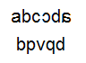
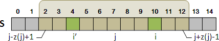
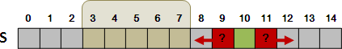
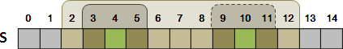
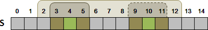
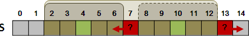
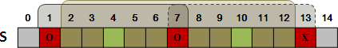
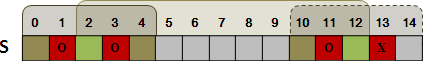
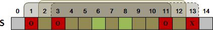

Palindrome
程度★ 難度★
Palindrome
「迴文」在中文當中是指倒正著念和反著念都相同的句子，前後對稱，例如「上海自來水來自海上」。在英文當中是指正著看和反著看都相同的單字，例如「madam」。
另外也舉些不是迴文的例子：「aabb」、「abcabc」。下圖也非迴文，儘管它非常對稱：
要檢查一個單字是否是迴文很簡單：
驗證一下程式寫的對不對：如果字母個數為奇數，則最中間的字母沒必要檢查，其他字母都會檢查到；如果字母個數為偶數，每個字母都會檢查到。OK啦！
UVa 10945 401 257 10716
Longest Palindromic Subsequence
程度★★ 難度★
Longest Palindromic Subsequence
是迴文而且是最長的子序列，可能有許多個。
s = 1 5 2 4 3 3 2 4 5 1 LPS = 1 5 4 3 3 4 5 1
找出一個最長迴文子序列
利用迴文的特性，從字串的左右兩端判斷其是否對稱，來縮小問題範疇。時間複雜度是O(N^2)。
UVa 11151 11404 10453 10617 10739 11584 689
以Longest Common Subsequence來計算Longest Palindromic Subsequence
反轉字串與原本字串的Longest Common Subsequence當中，其中會有Longest Palindromic Subsequence。
s = 1 5 2 4 3 3 2 4 5 1
reverse(s) = 1 5 4 2 3 3 4 2 5 1
LCS = 1 5 2 3 3 4 5 1
s和reverse(s)的LCS不一定剛好就是迴文。
不過至少會有一個LCS是迴文。
經過特殊處理，可以用LCS的概念來求出Longest Palindromic Subsequence。【待補文字】
Longest Palindromic Substring
程度★★ 難度★
演算法（Manacher's Algorithm）
運用了Gusfield's Algorithm的概念。時間複雜度為O(N)。
定義一個函數Z()，Z(i)是指以s[i]為中心的最長迴文，從中心到外端的長度，也就是說s[i ... i-Z(i)+1] = s[i ... i+Z(i)-1]呈鏡面對稱。
這種方式無法紀錄偶數長度的迴文。解決辦法是：在每個字元中間，插入同樣一個並且沒出現過的字元，如此就只剩下奇數長度的迴文了，而且也能紀錄原先偶數長度的迴文。
| 10 12 14 16 | 0 1 2 3 4 5 6 7 8 9 11 13 15 --+----------------------------------- s | a b a a b a a b s'| . a . b . a . a . b . a . a . b . z | 1 2 1 4 1 2 7 2 1 8 1 2 5 2 1 2 1 Z(0)：.，由中心可以左右延伸長度1。 Z(1)：.a.，由中心可以左右延伸長度2。 Z(2)：.，由中心可以左右延伸長度1。 Z(3)：.a.b.a.，由中心可以左右延伸長度4。
計算Z()，是由左往右算。Z(0)是特例，等於1，由Z(1)開始算。
計算Z(i)，是運用已經算好的Z(j)，j < i。也就是指某一段已經算好的s[j ... j-Z(j)+1] = s[j ... j+Z(j)-1]。首先找出有覆蓋到s[i]的s[j ... j+Z(j)-1]是那一段，而且j+Z(j)-1越右邊越好。
一、如果找不到可以覆蓋s[i]的s[j ... j+Z(j)-1]，表示已經算好的部份都派不上用場。從s[i+1]與s[i-1]開始比對，逐字比下去。
二、如果找到可以覆蓋s[i]的s[j ... j+Z(j)-1]，表示s[i]也會出現在s[j ... j-Z(j)+1]之中，把i鏡射到對應的位置i'。接著運用Z(i')，也就是指s[i' .... i'-Z(i')+1] = s[i' ... i'+Z(i')-1]。
二之一、如果s[i ... i+Z(i')-1]短少於s[j ... j+Z(j)-1]的右端，那就可以直接算出Z(i)的答案，就是Z(i')。
二之二、如果s[i ... i+Z(i')-1]剛好貼齊s[j ... j+Z(j)-1]的右端，那就必須檢查未確定的部分，直接從s[i+Z(i')]與s[i-Z(i')]繼續比對，逐字比下去。
二之三、如果s[i ... i+Z(i')-1]突出了s[j ... j+Z(j)-1]的右端，根據Z(j)可知s[j-Z(j)]與s[j+Z(j)]一定是不同字元，根據Z(i')可知s[j-Z(j)]與其鏡射位置是相同字元。對於i來說，s[j+Z(j)]與其鏡射位置就會是不同字元，不可能形成更長的迴文，因此可以直接算出Z(i)的答案，就是j+Z(j)-i。
  Timus 1297